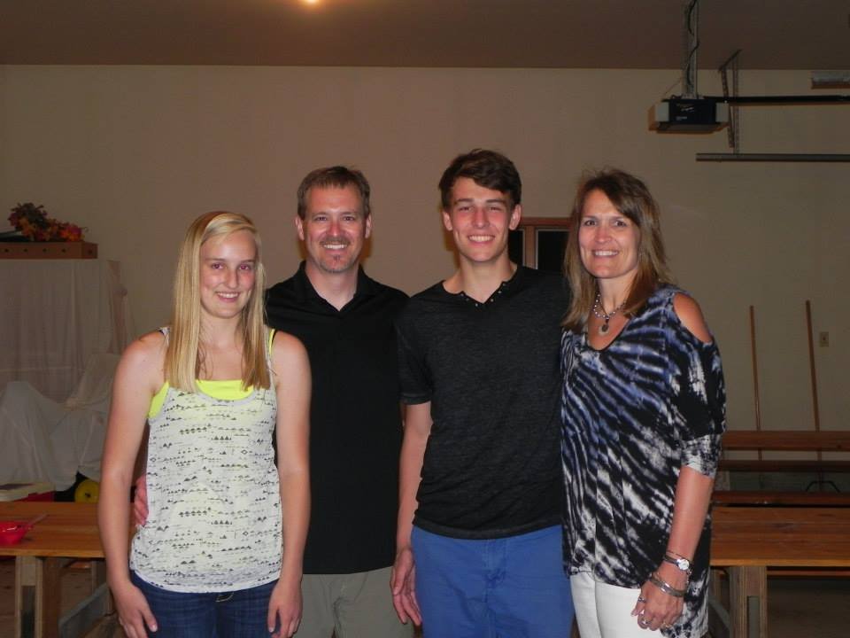
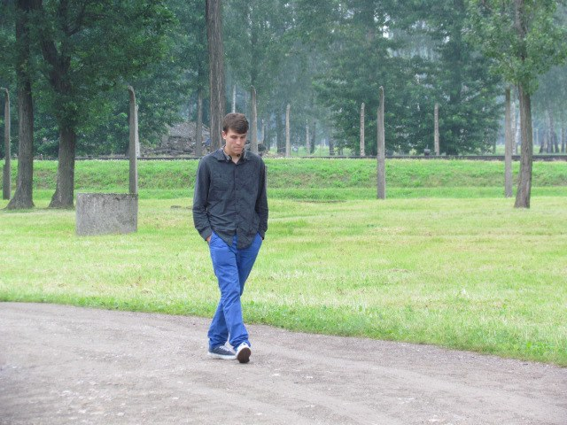

A Bit About Me
What's Your Name?
Hi, I'm Garret Meier, a freshman in Software Engineering at Iowa State University who is minoring in Philosophy.
Check out my resume to learn a little more basic information about me.
Why choose Software Engineering?
I first fell in love with computers after playing my first game of Age of Empires II, and my interest only deepened
after I truly learned what programming and software development entailed. Since I enjoy both software development
and the actual coding behind it, I chose Software Engineering as my major to learn the techniques behind both.
The S E program additionally offers the opportunity to see a holistic picture of technology including both software and hardware.
What is your programming experience?
My first programming experience was in High School with a language called Blitz Basic for three years. Towards
 the end of my junior year in High School, I began learning Java. I then completed two semesters of college
classes specifically in Java. One taught the basics and the second taught differing design patterns in Java
programs. I am currently taking a Design Patterns class in Java and have over a year and a half experience in
the language. I also took a class in C programming in Fall 2013. Additionally, I have approximately six months
experience in HTML, Python, and CSS which I have been teaching myself in my free time.
the end of my junior year in High School, I began learning Java. I then completed two semesters of college
classes specifically in Java. One taught the basics and the second taught differing design patterns in Java
programs. I am currently taking a Design Patterns class in Java and have over a year and a half experience in
the language. I also took a class in C programming in Fall 2013. Additionally, I have approximately six months
experience in HTML, Python, and CSS which I have been teaching myself in my free time.
the end of my junior year in High School, I began learning Java. I then completed two semesters of college
classes specifically in Java. One taught the basics and the second taught differing design patterns in Java
programs. I am currently taking a Design Patterns class in Java and have over a year and a half experience in
the language. I also took a class in C programming in Fall 2013. Additionally, I have approximately six months
experience in HTML, Python, and CSS which I have been teaching myself in my free time.What do you want to do in technology?
The most general answer I have about my goals in technology is that I am looking to innovate in any way I can. The
ability to completely change the perception of a technology drew me into the field in the first place and I am
looking to push the edges of whichever area of programming I enter into. More specifically, I see myself in
the role of someone who interfaces with both the clients and programmers to achieve the best final product. The
times I enjoy myself the most are the early developmental stages where the group throws ideas onto a whiteboard
and everyone collaborates to make the best final product. Following the evolution of a project from it's inception
to actually hashing out a UML diagram of the specifications stands out as one of my favorite feelings. I enjoy it
so much that sometimes I just come up with an idea and try to flesh it out just for the fun of it.
How do you stay busy outside of school?
With so many opportunities to express myself outside of school whether through clubs or anything else, it proves
continually difficult to choose how I invest my time. I like to stay busy with a variety of clubs and activities
though. Related to my major I spend a lot of time practicing my problem solving skills with the ACM Programming
competition team, the Computer Science and Software Engineering Club, hackathons, and Freshman Leaders in
Engineering. Outside of that I am a part of the Quidditch club on campus, I play intramural sports whenever the
opportunity arises, and actively participate in the Iowa State Honors Program. Away from organized activities, I
am a huge fan of bouldering, running, playing board games, attending concerts, and discussing politics. If you're
interested in seeing a few of my favorite things, check out my favorites page!
Why are you minoring in Philosophy?
I chose to minor in Philosophy for two reasons. The first is that I am interested in learning about the canonical
philosophical teachings, and the second is that I want to keep myself rounded in my interests. I enjoy the
reflective and introspective nature of philosophy, which questions the reasoning behind individual beliefs and
actions. Staying well-rounded as a person is a primary goal of mine which I believe taking philosophy classes
will help achieve. I enjoy reading, writing, and communication and don't want to lose that while studying Software
Engineering. I think it will help me to avoid becoming burned out as many programmers are.
What's a memorable fact about yourself?
If there's one thing that you should remember about me, it's that I am a cloud enthusiast!

 I like to find small problems which I can tackle in
an hour or two. Through this, I've discovered a little bit about optimization, memoization, and algorithms even though I haven't taken any formal classes covering those
topics.
I like to find small problems which I can tackle in
an hour or two. Through this, I've discovered a little bit about optimization, memoization, and algorithms even though I haven't taken any formal classes covering those
topics.